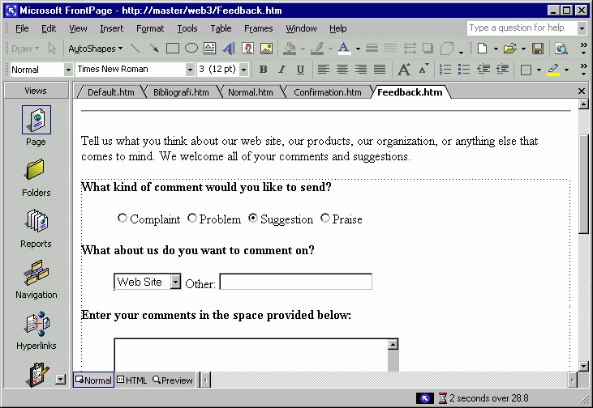
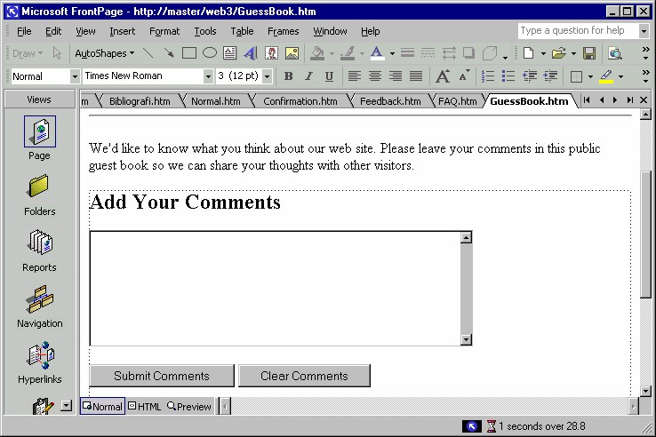
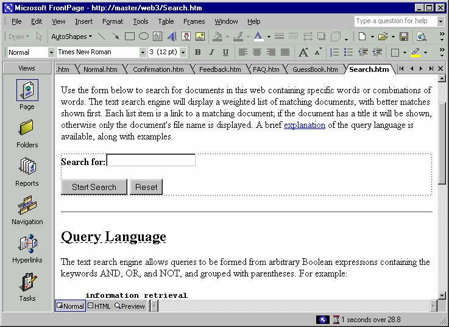
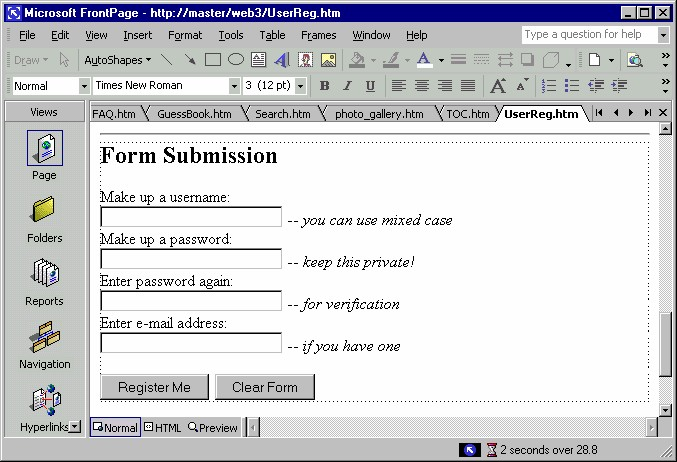

6 Template halaman interaktif
Baiklah, mari kita mulai dengan template halaman interaktif. Ada empat macam
halaman interaktif yang disediakan, antara lain Feedback Form, Guest Book, Search
Page, dan User Registration.
1. Setelah kotak dialog terbuka, jangan lupa untuk klik tab General, kalau
belum aktif.
2. Kemudian klik salah satu icon seperti yang akan dibahas satu persatu di
bawah ini. Anda bisa melihat tampilan awalnya pada kotak Preview di pojok
kanan bawah kotak dialog.
3. Setelah yakin, klik OK. FrontPage XP akan membuat sebuah halaman sesuai
icon yang Anda pilih.
6.1 Feedback Form
Feedback Form adalah sebuah form yang akan mengumpulkan informasi dari
pemakai dan menyimpannya ke file teks.
Tentu saja Anda dapat mengubah form itu untuk keperluan lain dengan melakukan
modifikasi di sana sini. Yang paling mudah dimodifikasi adalah teks, editlah sesuai
keperluan.

Gambar 3.43 Halaman Feedback Form
6.2 Guest Book
Nama Guest Book atau buku tamu ini sebenarnya lebih tepat dinamakan Comment
Book, sebab porsi komentar terasa begitu dominan.

Gambar 3.44 Guest Book
Nemun kita tidak bisa meremehkan kemampuannya untuk mengumpulkan namanama
dan alamat-alamat e-mail (dengan beberapa modifikasi tentunya).
Pemakai akan mengetikkan sebuah komentar pada kotak area (kotak teks dengan
ukuran besar). Selanjutnya komentar ini akan ditambahkan ke bagian bawah
halaman dengan menggunakanan Include WebBot.
Selain kotak teks area, terdapat dau buah tombol, yaitu untuk mengirimkan komentar
(Submit Comments) dan untuk membersihkan kotak area sehingga Anda bisa
menuliskan komentar baru (tombol Clear Comments).
6.3 Search Page
Search Page adalah sebuah form untuk pencarian teks. Kemampuannya sederhana
namun bisa kita gunakan untuk keperluan pribadi.
Halaman pencari ini akan akan mencari teks di situs web berdasarkan perintahperintah
query.
Halaman terdiri dari sebuah kotak teks untuk menuliskan teks yang Anda inginkan.
Tersedia juga dua tombol:
• Start Search, untuk menjalankan pencarian.
• Reset, untuk mengosogkan kotak teks sehingga Anda bisa menulis teks
baru.

Gambar 3.45 Search Page
6.4 User Registration
Membuat sebuah form self-registration. Pemakai memasukkan nama dan password.
Kedua data ini dapat digunakan untuk konfirmasi identitas pemakai pada saat
pemakai tersebut mengakses site ini.

Gambar 3.46 User Registration
Copyright © Herlan Lesmana
Created with the Freeware Edition of HelpNDoc: Easily create HTML Help documents